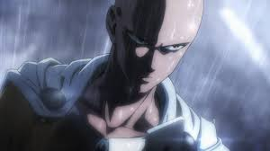

Before becoming a hero he was an average salary man and didn't seem interested in anything initially though becoming a hero has actually always been a dream of Saitama's. After becoming a hero, Saitama has a big problem now he has to deal with, he is now too strong to gain any thrill from battle.
The Demon cyborg Genos is an extremely serious character, rarely if ever making jokes. He constantly aims to become stronger and frequently looks to Saitama for advice to achieve his goals. Since becoming Saitama's disciple, Genos is very reverent and protective towards Saitama
Terrible Tornado is recognized as one of the Hero Association's most powerful heroes.She is an esper with arrogant personality, but she feels obligated to defeat monsters and considers her job as a hero to be a duty, accepting any of the Hero Association's and save citizens.

Silver Fang is a martial arts master, the creator and teacher of Water Stream Rock Smashing Fist, and was formerly a professional hero. He is the 3rd highest ranked S-Class hero of the Hero Association and recognized as one of its most powerful heroes.
Hero name metal knight,Bofoi acts mainly through the use of his robots controlled from a safe distance.Being an S-Class hero, it can be assumed that Bofoi is very powerful, though he got to that position due to his brainpower and the strength of his weapons, as opposed to any of his own physical capabilities.